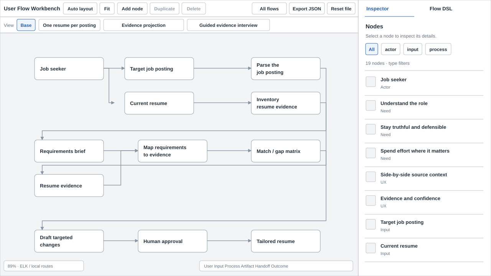

01 / Current flow viewer
Low-fidelity trace of the inspected flow viewer. Gray marks existing UI; the graph is simplified, not a new design.

- Existing: action toolbar, view tabs, flow canvas, and fixed inspector.
- This baseline is traced from the live viewer; graph geometry is simplified.
- Current picker failed to open during inspection; its code supplies the next frame’s starting structure.
Actual current UI used as the reference

Captured from the local viewer. The picker link raised a client exception during inspection. The picker wireframe uses its existing component structure.